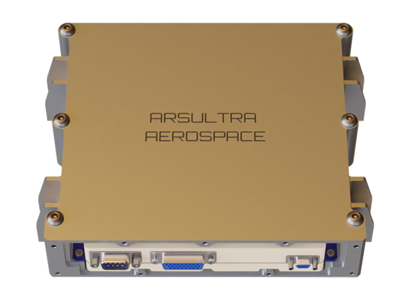
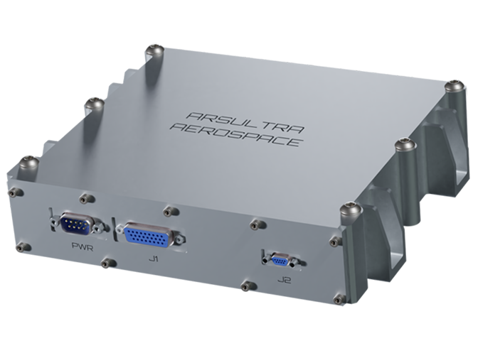
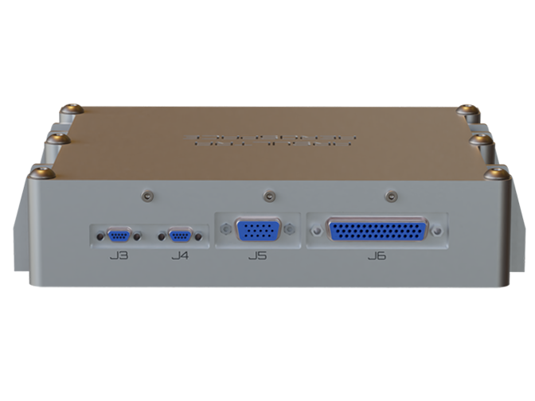
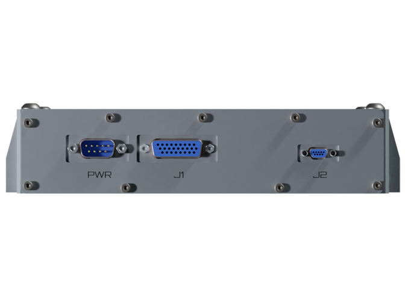

•Single +5V external input voltage.
•High Performance Rad-Hard components.
•Board Size: 150 x 155 x 15 mm
•Three micro DB9 and three type D-Subminiature HD Connectors for external interfaces.
•One dual core Leon3-FT SPARC V8 compliant 32-bit processor.
•One 32K x 8-bits PROM Memory.
•Two 8M x 8-bits FLASH Memories.
•One 4M x 39-bits (32 bit data plus 7 bit for EDAC) SRAM Memory.
•One 64M x 48-bits (32 bit data plus 16 bit for Reed Solomon EDAC) SDRAM Memory.
•Power supervisory circuit to monitor supply voltages and protect the CPU.
•Watchdog system to automatically reset in case of the software fails.
•Triple Hardware Rescue under sw fail.


•Four RS-422 Full Duplex Ports.
•Two SpaceWire Ports.
•Two CAN 2.0 Bus.
•SPI / I2C.
•Eight input and eight output general purpose ports.
•One Telemetry / Telecommand (TM/TC) RS-422 interface port.
•Pulse per second: two input and two output RS-422 interface ports.
•One JTAG interface for programming/debugging.